Reading: Chapter 2
Recap
Welcome or welcome back! Last time we have seen an overview of where we are in the Universe and how things move intrinsically with respect to each other:
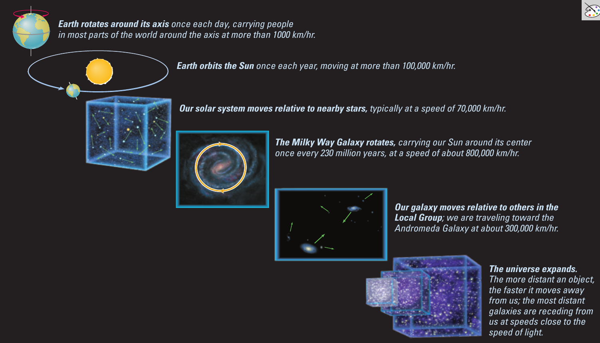
The aim of today's lecture is to analyze in a bit more detail how we see things moving in the sky from our Earthly perspective.
Second try: Top Hat
Go to Top Hat, folder 02-Celestial-sphere, and answer the 3 questions.
Naked eye observations
Every night, you can see the apparent motion due to the Earth rotation in a long-exposure image, or just saying out long enough and paying attention to the sky:
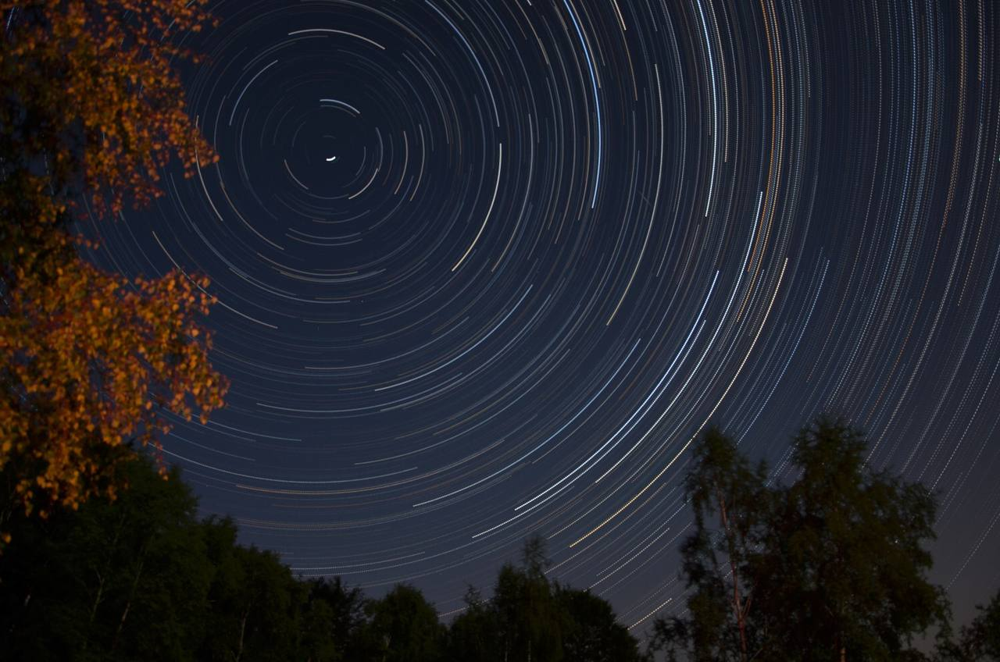
The star around which every other star seems to turn around is Polaris, the north star. It actually only coincidentally is close to the direction pointed at by Earth's rotation rate! This star is not even particularly bright, but identifying it helps finding the direction of North, which is useful for navigation.
It can be found identifying the "Big dipper", an famous asterism (which is a "piece of a constellation"):
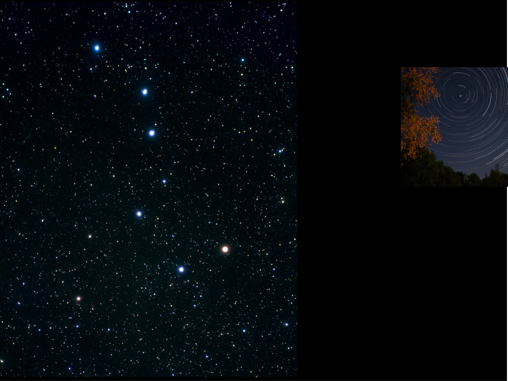
This constellation was also used as a "test" to see if your eyesight was sufficiently good to be an astronomer in hellenistic times (pre-telescopes!). The test was to find among the 7 stars which is a visual binary, i.e., two separate distinguishable sources.
You can try to do this tonight – it should be possible only with perfect vision.
Each star rises towards the East and sets towards the West because of the West-to-East rotation of Earth, dragging you and your point of view around with it.
Celestial sphere
The celestial sphere is an idealized surface of a sphere of infinite radius centered on Earth over which the images of stars are projected.
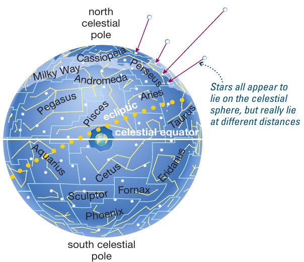
- North and south poles are projection of the Earth's rotation axis on the celestial sphere
- The celestial equator is the intersection between the Earth rotational equator and the celestial sphere
- zenith is the point right above on the celestial sphere, varies with the position of the observer (zenith at the north pole = north star)
- nadir is the opposite point, never visible.
Stellarium web allows one to see the celestial sphere from different points of views (on the Surface of Earth, the non-online open-source application allows also from other solar system bodies!), which can be used to plan observations. The button in the bottom left allows to change location of the observer, and the button in the bottom right allows to move the sky forward/backward in time.
The plane of the ecliptic is the plane traced by the orbit of the Sun as seen from Earth, or in other words, the plane of the orbit of the Earth around the Sun. You can see it on Stellarium web using the checkboxes under "View settings" on the top left.
Angular distances and size
Because stars are at different distances along the radial direction of the celestial sphere, it is hard to tell their distance in 3D. But in projection on the celestial sphere, we can tell the angle between them. This is a measure of their apparent distance in projection, but for example, it needs to be sufficiently large for two stars to be distinguishable!
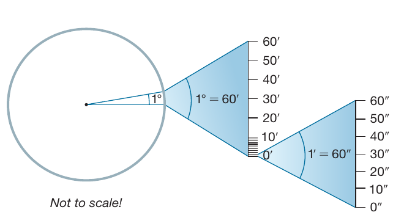
Roughly, at arm's length, the angle of sky covered
- by one finger ∼ 1 degree
- by one fist ∼ 10 degrees
- by a stretched hand ∼ 20 degrees
This can be used, for example, to measure the time to sun set: the Sun goes around ∼ 180 degrees every day (half a full circle, the other half happens during the night), which lasts about 12 hours, so it moves about ∼ 180/ 12 = 15 degrees/hour. When the Sun is about 1.5 fists height above the horizon, there is still about one hour before it sets (adjustments due to local topography, e.g., presence of a mountain, time of the year and latitude are needed to be precise).
We can also define the angular size: a disk of radius \(D\) at a distance \(s\) will have an angular size of \(\theta = \frac{D}{s}\frac{\mathrm{360 degrees}}{2\pi}\). If the angular size of an object is smaller than the smallest angle we can measure, typically the diffraction limit, then it will appear to us like a point-source.
N.B.: Angles are by definition the ratio between the length of an arc along a circumference and its radius, so they are the ratio between two lengths, which makes them a dimensionless number.
This is true for all stars but the Sun as seen by the naked eye (because despite their large radii, recall \(D\sim R_{☉}\sim 10^{10}\) cm, their distances are even larger, \(s\sim\) 1-104 ly = 1-104× 1018 cm) .
Constellations
We have already referred indirectly to the concept of a "constellation". Many different cultures have created narratives about figures apparently drawn in the sky by stars projected on the celestial sphere. Humans are biologically good at finding patterns, and patterns among the stars have been useful story-telling devices, and mnemonic tools.
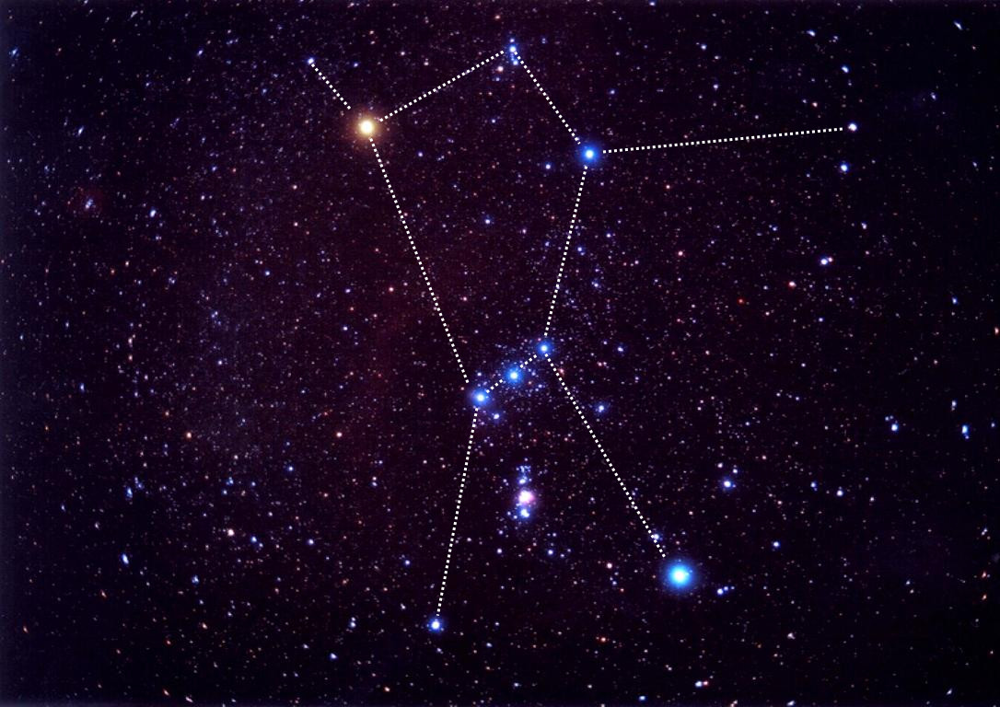
However, the figures they are based on are just apparent and temporary. In fact brighter stars can be seen farther, and in 3D, members of the same constellation may be extremely far from each other! Moreover, stars in the Galaxy move around (orbiting the galaxy and because of their local peculiar velocity), with speeds that depend on their position. Given enough time (the relevant scale is 100s of millions of years, short compared to the age of the Sun!), the drawings will stretch, deform and disappear.
Moreover, our own point of view drifts in time: the Sun and solar system move. But while this takes millions of years, there are other smaller motion that happen faster that influence how the sky appears to us. The Earth's rotation "wobbles" (precess) with a period of 10s of thousands of years: what was at certain celestial coordinates 2000 years ago is not the same as today! The orbit of the Earth around the Sun also "wobbles", changing the plane of the ecliptic (i.e., the plane of the apparent motion of the Sun on the celestial sphere).
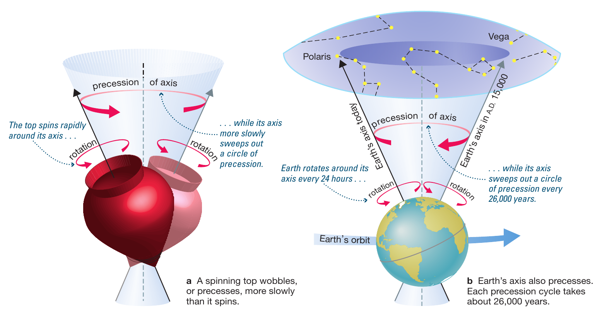
Modern astronomy still uses constellations as a useful reference
point, for example many stars visible by naked eye can be referred to
as <greek letter indicating brightness> + <greek name of
constellation>. The letters are assigned in order of brightness (e.g.,
α Orionis = Betelgeuse is the brightest star in the constellation
Orionis, ζ Ophiuchi is the 26th brightest in the constellation
Ophiuchus). But each constellation is a specific patch of the
celestial sphere defined as a polygon on it: astronomers tassellate
the celestial sphere with arbitrarily defined "constellations" that
roughly match historical constellations.
The zodiacal constellations are those that at a given point in the year are "hidden behind the Sun", that is the ones along the ecliptic plane.
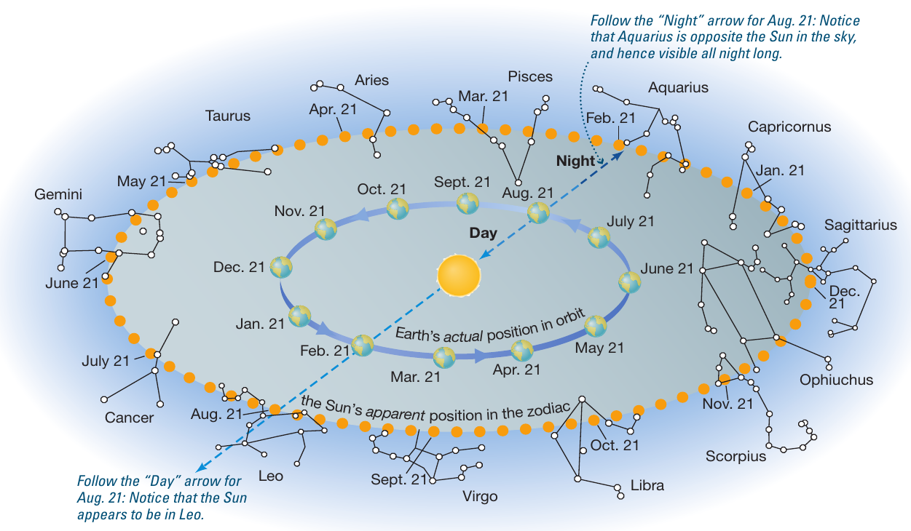
Which constellations one sees varies with latitude on Earth (i.e., how far north/south one is), but not longitude (how far east/west one is). This is because Earth's rotation is in the West-to-East direction: different points at different longitudes will see the same patch of the sky at the zenith at different times (i.e., different phases of the Earth's rotation). Conventionally, longitude is measured starting from the Greenwich meridian (from the British empire).
Viceversa, the latitude determines what part of the sky is above the horizon at any given rotation. The simple example is: could you see Polaris from the South pole?
As one moves along the surface of the Earth southward, what stays above the horizon changes.
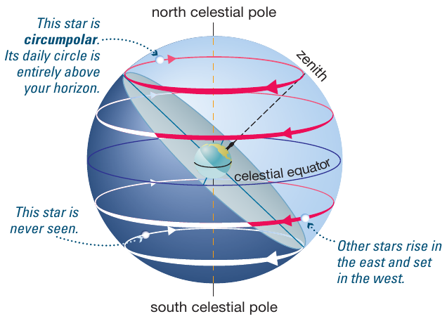
The reason for the seasons
Q: What is the reason for seasonal variations in weather patterns?
Since the Earth's rotation axis maintains it's inclination of ∼ 23 degrees w.r.t. the direction perpendicular to the plane of its orbit around the Sun (i.e., the ecliptic plane), depending on whether an emisphere is pointing "towards" the Sun or "away" from it, it will receive Sun light at a different angle and for a different amount of time.
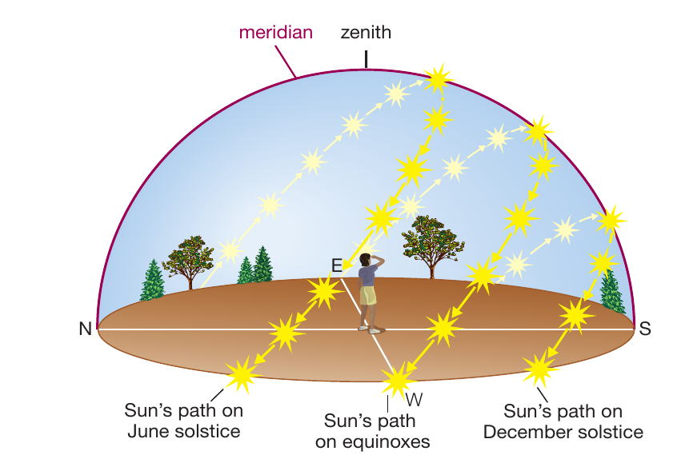
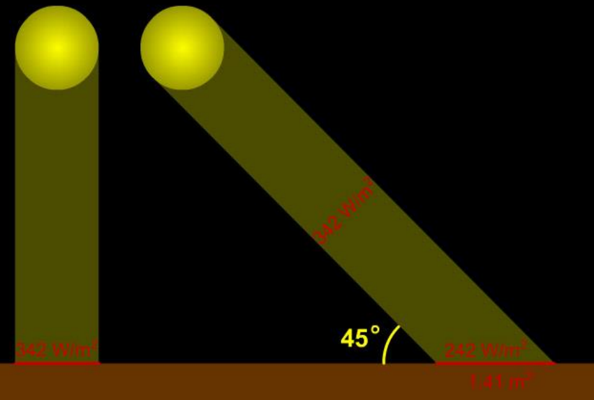
The change in daily energy input from the Sun (due to inclination) and duration of such input (due to the length of the path on the sky) causes the atmosphere and Earth below it to be "forced" differently, creating different climate conditions along the year.
Equinoxes and Solstices
∼21 March and ∼ 21 September approximately mark the day of the Spring and Fall equinoxes, which are the days in which the Sun shines for the same amount of time on both hemispheres. In these days the Sun rises and sets exactly at East and West, respectively.
∼ 21 June and ∼ 21 December are instead the Summer and Winter solstices, the days where in the northern hemisphere the sunlight is longest and shortest respectively.
These approximate dates, or more precisely, the astronomical events occurring on these dates have influenced religions all over the world, with every culture having some form of winter solstice celebration (amount of daylight bouncing back and increasing again), equinoxes, etc.
The moon
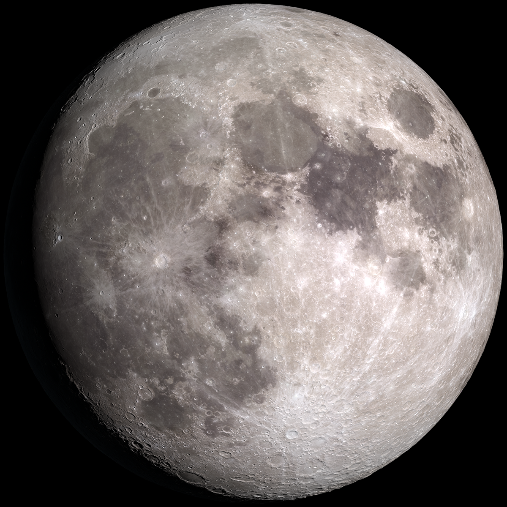
The moon is a satellite, a major astronomical body of the Solar system that does not orbit the Sun, but a planet instead, Earth. It likely formed from the impact between Earth and a Mars-sized planet in the early evolution of the Solar system, which took some mass away from both bodies and sent it in an orbit around the planet.
While the Moon is still slowly drifting away from Earth, it is still very close (and very big relative to Earth compared to other moons in the Solar system), with the Moon-Earth distance being only 64× the radius of the Earth.
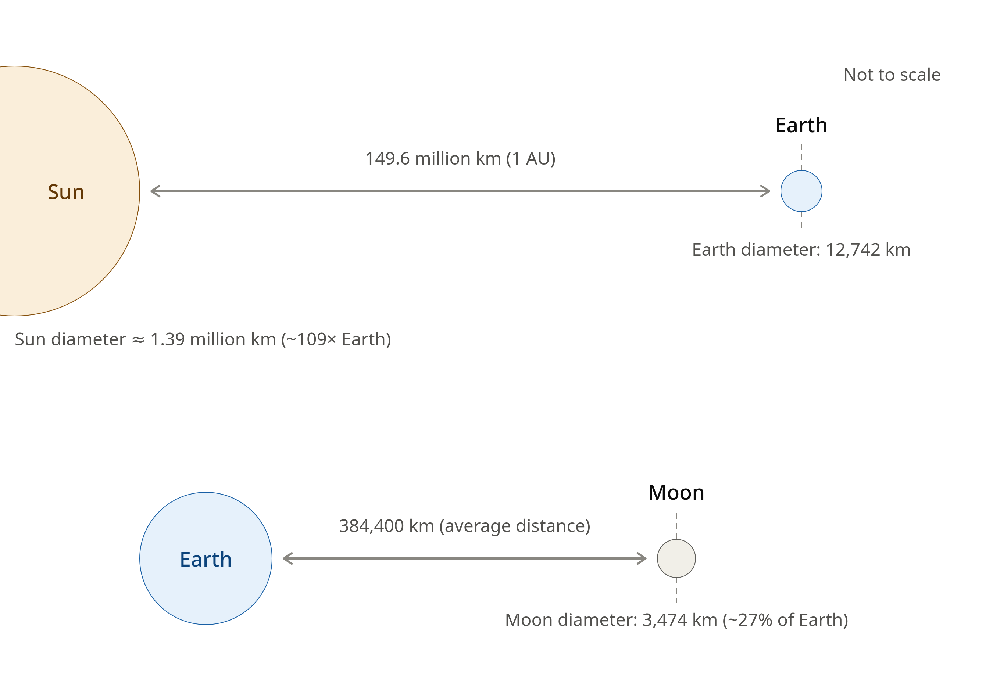
The orbit of the moon around the Earth takes about a month (there is a common root between the word "Moon" and "month"!), which is also its rotational period: the moon orbits around the Earth and rotates around its axis at the same rate.
N.B.: This is the configuration that minimizes the energy!
This means that seen from Earth, the moon always shows the same "face". The backside, not visible, is referred to as "dark side", but it is not dark: it receives as much sunlight as the face towards the Earth! It is dark to radio waves from Earth, because it is in the shade of the moon itself as seen from Earth.
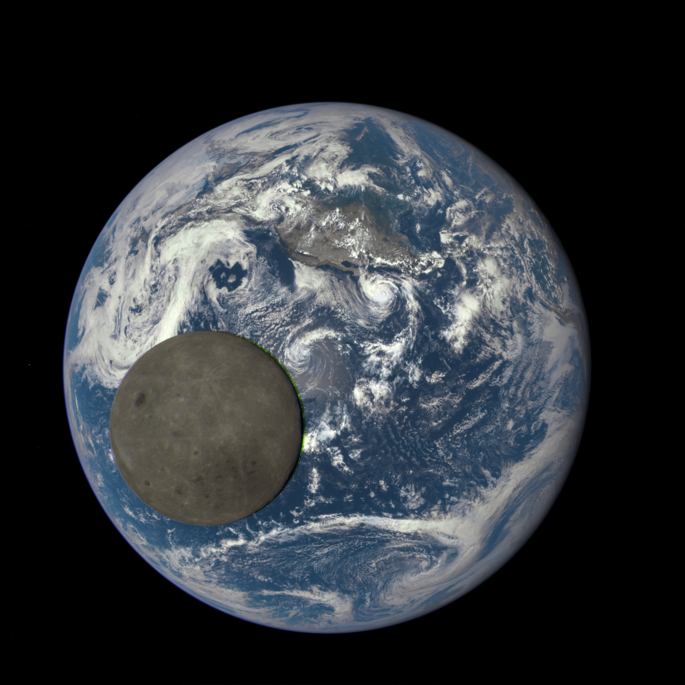
Phases
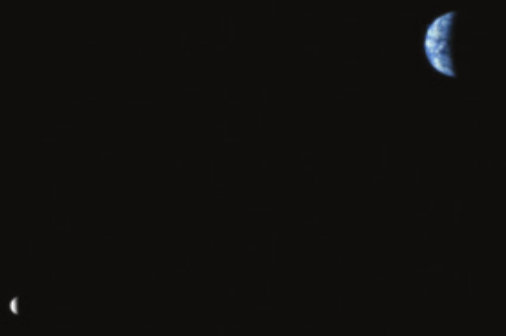
Imagine the "dark side" in this picture: since the Earth is in the top right, the bottom left half of the moon is the "dark side", which is more than half illuminated by the Sun (with the dividing line perpendicular to the Earth-Moon direction, not aligned with the day-night dividing line on the Moon).
Depending on the relative position of the Moon and Sun, we observe phases of the moon. Remember that the moon goes around the Earth roughly once a month, we see all the phases each month because of this.
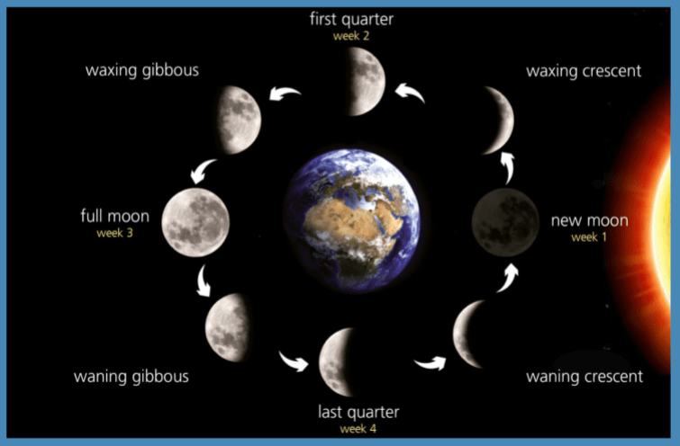
Eclipses
Since the diameter of the moon is about ∼ 1/400 of the diameter of the Sun, but it is about 400× farther, the apparent angular size of Moon and Sun is the same. This is a cosmic coincidence, true now and only in the Earth-Moon-Sun system.
Therefore, when the Moon passes in front of the Sun, or the Earth passes in front of the Sun as seen from the moon, we have an eclipse. Eclipses on other planets can be impossible (no Moon, misaligned moon orbit), only anular (smaller angular diameter of Moon cf. Sun) or partial.
Lunar
The moon is hidden in the shade of the Sun:
#+Cartoon of lunar eclipses.
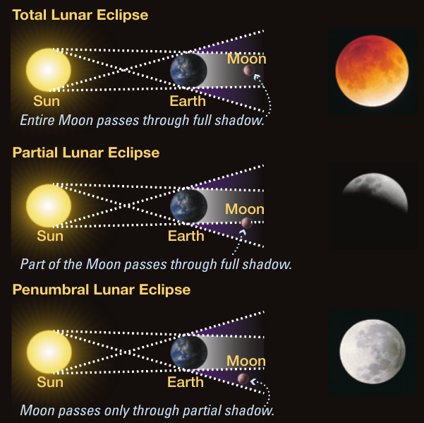
Solar
The Sun is hidden in the shade of the Moon:
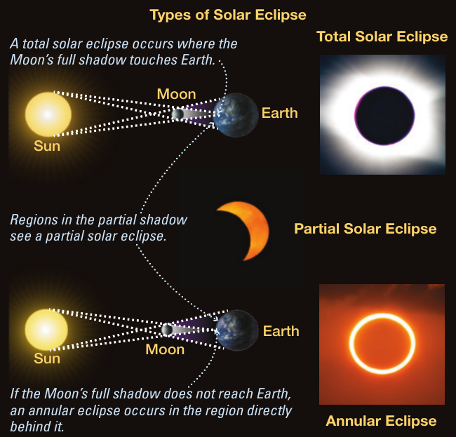
The path of totality is the ensemble of points on the surface of Earth beneath the shadow of the Moon, in the region where the Moon's angular diameter is wider than the Sun's:
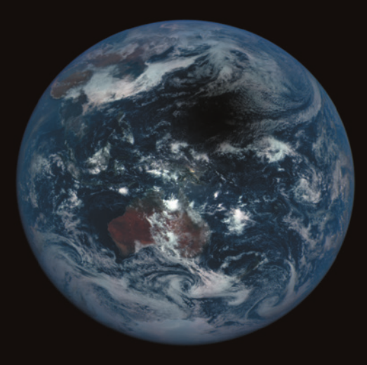
Why not every month?
The orbit of the Moon around the Earth and the ecliptic plane (of the orbit of the Earth around the Sun) are not perfectly aligned: most months the Moon is just too high/low to pass exactly in front of the Sun.
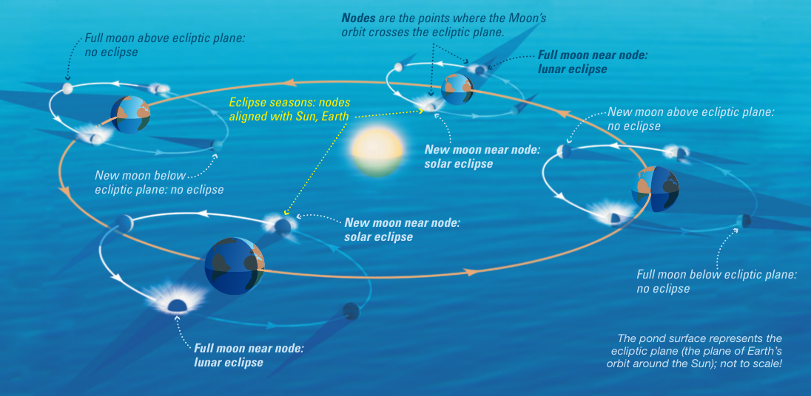
This complicates predicting the time and location of eclipses, although this problem has been solved long ago (Columbus used this ability to manipulate Native americans on his arrival).
The puzzle of planet motion
What is a planet?
The word comes from greek "wanderer" because, unlike all other stars, their motion on the celestial sphere as observed through the years from Earth seems irregular, relative to background stars.
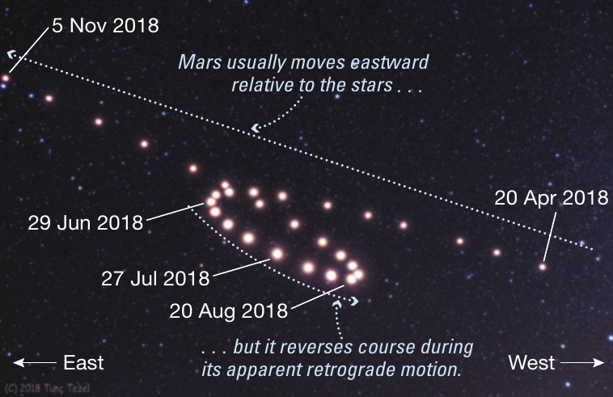
In fact, planets exibit retrograde periods of motion, where instead of going East-to-west, they appear to move in the opposite side. This always posed a challenge for cosmological models putting the Earth at the center of the Universe and everything rotating around it – this is why epicycles and other modifications to geocentric theories were always needed to reconcile them with the observations of planets.
N.B.: This is the motion as the year progresses, that is as the planets move around the Sun. Their nightly motion apparent due to Earths' rotation is always rising at the East and Setting at the west.
N.B.: The historical definition based on their peculiar motion in the night sky includes the Sun and the Moon which also move in a peculiar way!
A faster way to find planets
To use this to identify a planet, one needs several nights of observations. However, planets have also another visible feature that one can discern quickly by naked eye: unlike stars, planets don't twinkle.
The reason is that while planets are smaller (recall for the Earth \(R\sim 6000\) km) than stars, they are also much closer (distances on the scale 1-10 au, instead of 1-1000 light years). This means their apparent size (see above) is larger. To our eyes, a planet appears as a marginally extended source (if your eyes were digital cameras, imagine they would be 4 pixels instead of 1), unlike stars that are true point-like sources (size less than a pixel).
When the light (from the Sun bouncing off a planet, or another star)
crosses the atmosphere, it will interact with the gas in Earth's
atmosphere. This has a finite temperature (meaning each molecule of
gas moves around a bit) and constant small turbulent motion. If the
light only goes through one patch of the atmosphere moving coherently,
as the patch changes, the light changes, causing the twinkling of the
stars. But for a planet, it doesn't go through one patch only, but a
little bundle of patches. The "wiggling" of the air in the atmosphere
in front of a planet averages to zero and the planet doesn't twinkle.
You can test this tonight if it is not cloudy! Look at the stars, and
find bright ones that are not twinkling: there is a good chance they
are a planet. Use stellarium-web or any other "night-sky" app to
verify your hypothesis.
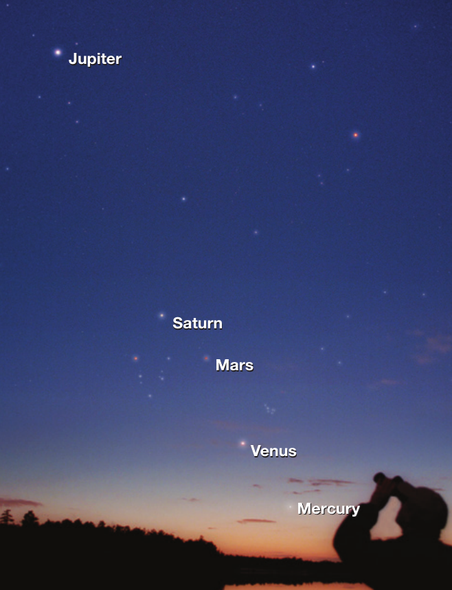
An heliocentric perspective on retrograde planet motion
Several people had proposed heliocentric models of the cosmos throughout history, and it was known it would simplify explaining the motion of planets. However, accepting an anomaly for a handful of astronomical object seemed like a good cognitive trade off compared to other problems heliocentric models produced at the time (see below).
In a heliocentric perspective, the planets (including Earth) go around the Sun, and the inner planets orbit faster than the outer ones (this is one of Kepler's laws). Whenever a planet inside the orbit of another (e.g., the Earth's orbit inside Mars'), it will take over, and at the moment it takes over, relative to the inner planet, the outer will appear to move backwards.
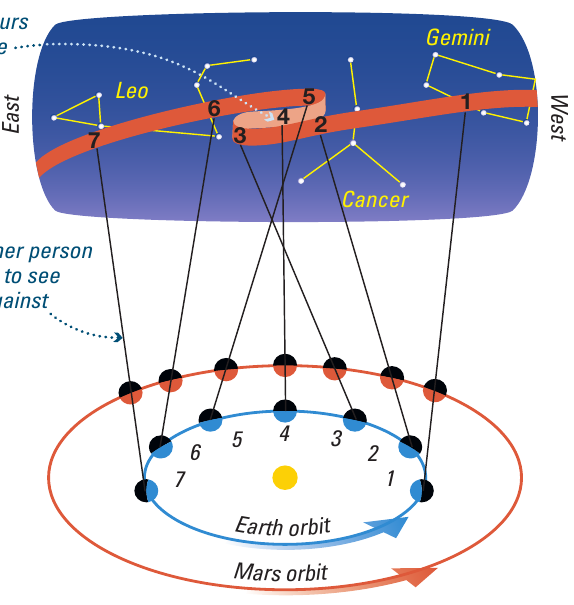
Why hold on to a geocentric perspective until the 1600s?
The biggest counter argument to a heliocentric theory in ancient Greece was not religious, but empirical: if the Earth goes around the Sun (once a year), it should be on opposite sides every ∼ 6 months.
Therefore the stars as seen from Earth should have an apparent motion (reflecting the motion of the Earth around the Sun), with yearly timescale, which is called parallax.
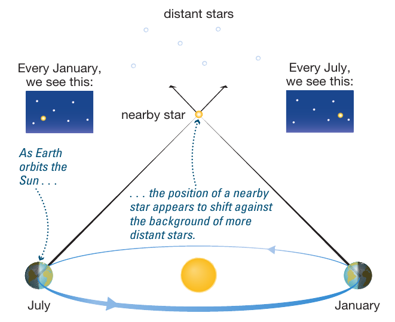
The parallax is just the "apparent motion" of nearby objects (w.r.t. objects much farther away) due to the change in point of view. Your brain uses this to reconstruct depth: each of your eyes are at a slightly different position, so nearby objects have different positions on your retina in each eye (while distant objects remain closer to themselves in each eye). Our brains detect this and perceive it as distance.
A changing of point of view can be used to measure distance by other animals too (like a pigeon "bobbing" its head or a lizard doing "push ups").
This effect could not be detected by naked eye in ancient times, hence the preference for a geocentric system that made it hard to explain planet motions, but didn't require to explain away the absence of parallax. Now-a-days, with more precise tools, we do detect and use this effect. For example 1 pc is the distance Sun-star for a star showing 1 arcsecond of yearly parallax!
With the detection of astronomical parallax, the problems of a heliocentric system disappear, leaving the geocentric system just with the complications of explaining planet motions without any pay off.